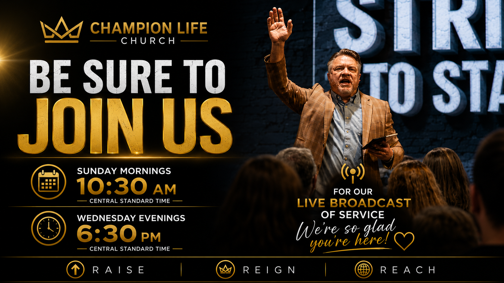

Watch
Faith comes by hearing.
Join Champion Life live or explore messages designed to build faith and help you live victoriously.
Champion Life Online

Worship Through Giving
Give Now
Participate in this opportunity to sow.
Even when you’re joining us online, you can participate in this moment of worship and sow into what God is doing through Champion Life Church. Thank you for your faithfulness and generosity.